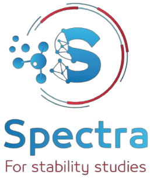
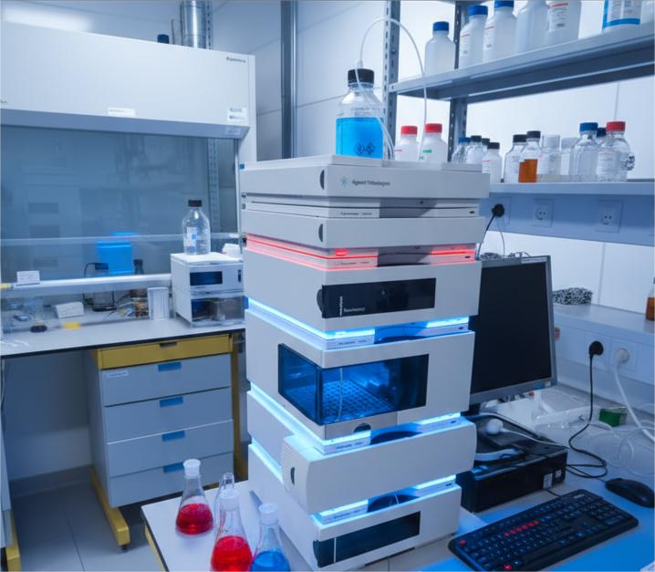
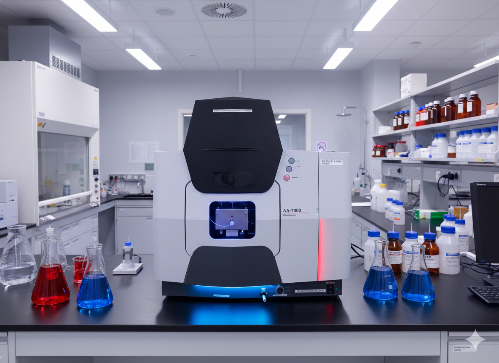
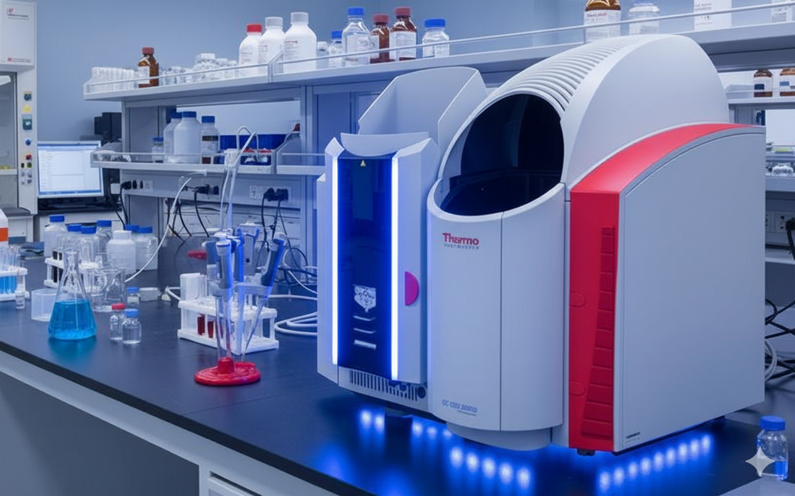

Spectra lab
Analysis and Stability of pharmaceutical products certified from EDA

Analysis and Stability of pharmaceutical products certified from EDA
We conduct in-depth research to
find innovative solutions
Our analysis processes ensure
accurate and reliable results
We provide diagnostic
services with precise an timely results
Spectra Lap is a modern and trusted laboratory that offers highly accurate, efficient, and cost-effective analysis and diagnostic testing services. The lab is committed to delivering reliable results using advanced technology and professional expertise, ensuring that patients and healthcare providers receive timely and precise information for better health decisions. Spectra Lap focuses on quality, speed, and affordability, making it accessible to everyone without compromising scientific standards.

The Agilent 1200 Series HPLC system is a high-performance liquid chromatography platform known for its exceptional reliability, versatility, and precision in analytical separations.
The Agilent 1200 Series HPLC is a reliable and precise system designed for efficient separation of complex mixtures. It uses a high-pressure pump and an autosampler to deliver accurate gradients and consistent sample injection. Its temperature-controlled column compartment ensures stable separation performance, while multiple detector options enable sensitive analyte detection. Compatible with advanced Agilent software and built with a modular, durable design, it provides long-term, flexible performance for various analytical applications.

The Shimadzu AA-7000 Series is a compact, high-performance atomic absorption spectrophotometer offering outstanding flame and furnace detection through its optimized 3-D optical system and enhanced graphite furnace design.
The Shimadzu AA-7000 Series is a compact, high-performance atomic absorption spectrophotometer offering outstanding flame and furnace detection through its optimized 3-D optical system and enhanced graphite furnace design. It automatically selects the ideal photometric system for each mode and allows both flame and furnace analysis without changing atomizers. A versatile autosampler boosts automation by mixing samples with multiple solutions, improving workflow efficiency. With advanced background correction and industry-leading safety features like automatic flame shutdown and gas monitoring, the AA-7000 provides precise, efficient, and safe elemental analysis.

The Thermo Scientific iCE 3000 is an advanced atomic absorption spectrometer known for its high precision and ability to accurately measure trace elements with exceptional detection limits.
The Thermo Scientific iCE 3000 is an advanced atomic absorption spectrometer known for its high precision and ability to accurately measure trace elements with exceptional detection limits. It offers adjustable spectral bandwidths from 0.1 to 1.0 nm and features a rapid sample introduction system that enhances analytical efficiency. Fully automated with full elemental capability, it operates through the Thermo Scientific ICE SOLAAR software for streamlined control. Its reliable performance and quantitative accuracy make it a preferred instrument for research and quality-control laboratories.